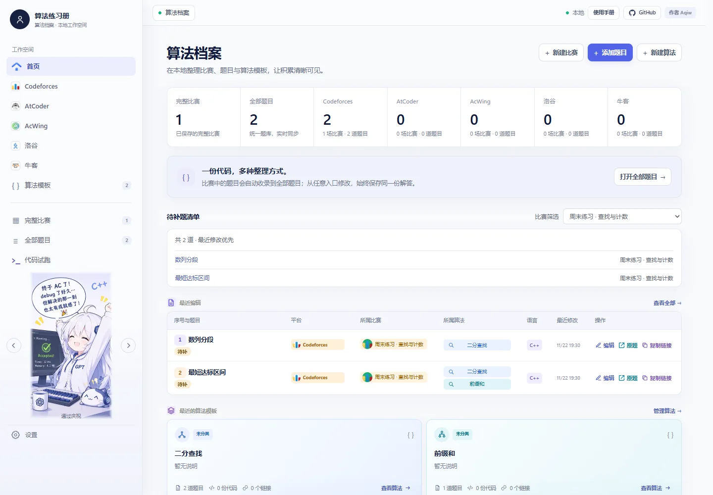

练习：记录一个二分边界问题
- 在题目行点「编辑」，把「补题状态」从「未做」改为「待补」。没有源码的题也可以这样标记。
- 在错因笔记中写下可复查的一句话，例如「找最后一个 ≤ x 的位置时，区间只剩两个数会死循环」。保存题目。
- 回首页，在补题清单选择所属比赛。确认这道题出现在列表里。
补完后怎么找回？
回编辑页，把状态改为「已通过」并保存。它会移出待补队列；在「全部题目」按状态筛选，仍能找到原代码和笔记。

回编辑页，把状态改为「已通过」并保存。它会移出待补队列；在「全部题目」按状态筛选，仍能找到原代码和笔记。
